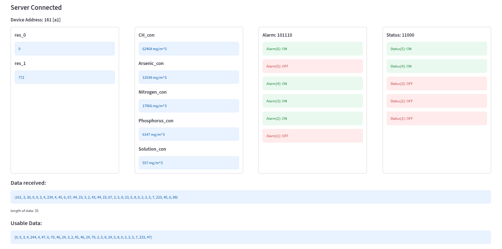
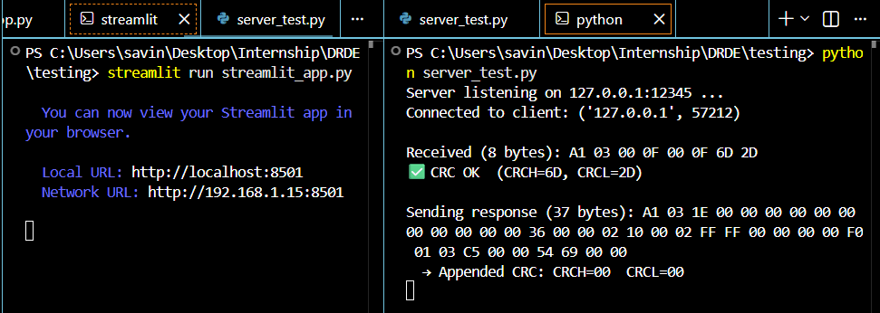

CS student interested in machine learning, systems, and building things that matter. I write about what I learn, compete in programming contests, and contribute to open source.
I view computer science not just as a career, but as a lens to solve complex structural problems. My focus lies at the intersection of efficient algorithms and scalable machine learning models.
When I'm not in front of a terminal, you'll find me analyzing chess games, reading architectural history, or contributing to the next generation of developer tools.
B.Tech in Computer Science
India
Why the most “automatable” role may actually be the most resilient.
This era marks the shift from chatbots to Agentic Systems that autonomously execute real-world workflows and business processes. Why Execution Speed is the New Moat

A Python-based system that converts raw serial communication into validated, structured data using CRC-16, with real-time visualization and automated logging.
View Repository ↗
A mini industrial communication system that ensures safe data transfer using CRC and visualizes results in a real-time dashboard.
View Repository ↗Sends and receives the Data from the embedded systems and stores them in a text file. Connects using Serial-Port
View Repository ↗I'm always open to interesting conversations, research collaborations, or open-source projects.